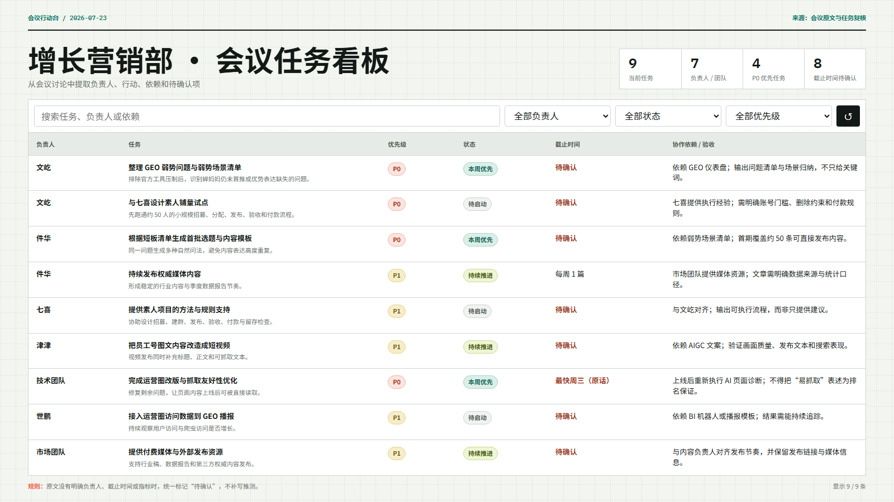
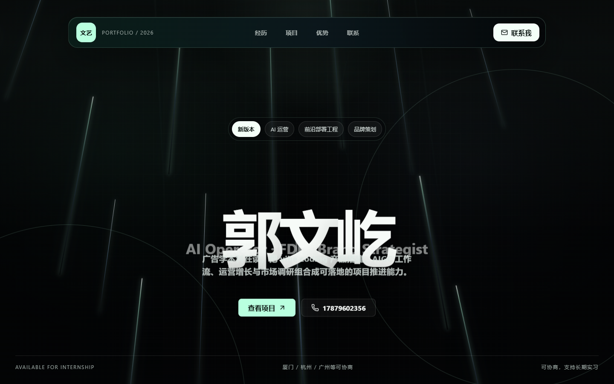
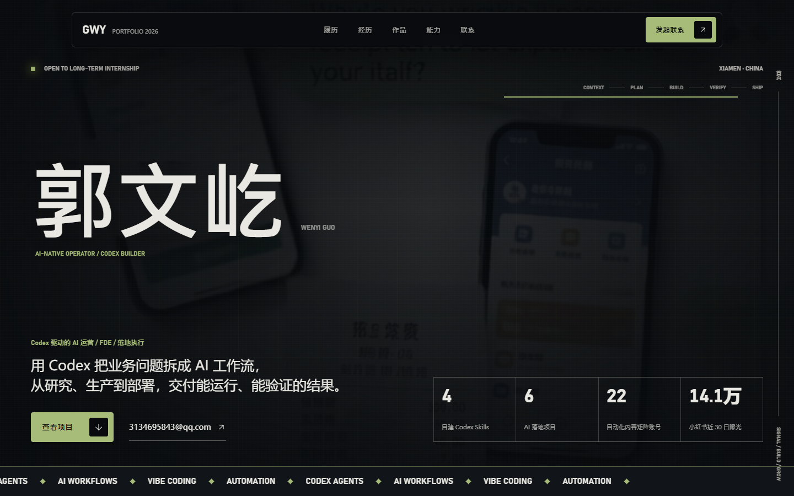
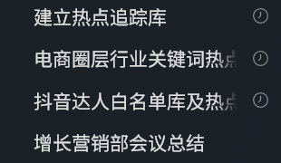
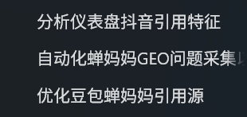
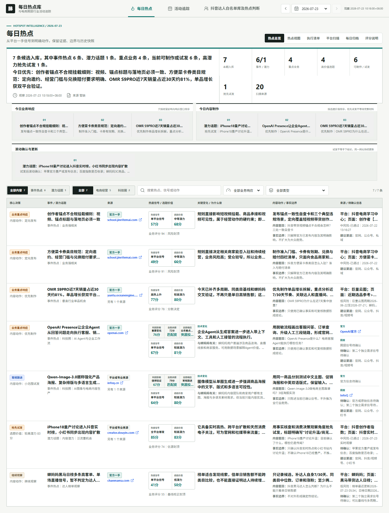

把模糊想法写成可执行任务
说清目标、上下文、交付物、边界与验收。
AI 实践分享 / 2026.07.24
提示词、技能包与自动化的真实实践
今日目标
60分钟：分享 + 演示 + 交流
说清目标、上下文、交付物、边界与验收。
从材料、受众和审美出发，边看效果边调整。
让AI不只回答一次，而是按规则持续完成任务。
成长主线
应用场景变真实，约束逐渐变复杂
大一下：作业、资料整理，AI还是辅助工具。
2025.12：美图AI贴纸，第一次参与真实产出。
个人网站：第一次相信AI能完成一个完整作品。
2026.04–06：水豚记账MVP，参与拆解、实现和迭代。
把选题、视觉和检查标准写成工作流与技能包。
2026.07：数据、评分、网页、部署和定时任务闭环。
为什么会提效
从一个动作，走向一整条任务链
邮件、周报、方案和大纲更快，但资料与判断仍主要由人完成。
提取、比较、质疑和检查，被拆成相互衔接的步骤。
从信息输入到行动输出，都有规则、验收、人工决策和复盘。
提示词
判断标准不是字数，而是错误成本
结果直观、可以马上重来，不必先写一整页规则。
例如：整理会议待办。
涉及人名、功能和交付标准时，必须告诉AI怎样做、怎样查。
例如：生成可筛选会议看板。
越需要对结果负责，越要把需求、过程、检查和交付说清楚。
参考：OpenAI 提示词指南；中文解读
四段式任务
重要任务的最低信息量
要解决什么问题、给谁使用、现有材料和限制是什么。
先做什么、后做什么，缺失信息和异常怎样处理。
核对事实、数据、功能和不同屏幕下的页面表现。
最终文件、打开方式、完成状态和待确认事项。
一句话提示词
打开并复制提示词 ↗网页制作
从材料到可交付结果
审美偏好在执行前说清楚，功能与事实在交付前逐项检查。
验收
承接刚才的会议任务看板

核对负责人 保留待确认 测试筛选从一次到复用
一次说明 → 固定步骤 → 稳定复用 → 定时唤醒
告诉AI这一次要做什么、怎样检查和交付。
把一项任务拆成稳定的执行顺序和人工节点。
保存规则、资料、输出格式、边界和验收标准。
在正确时间和窗口调用技能包，并汇报结果。
常用技能包
让Codex查找、核对来源并安装
安装前检查：来源、用途、安装量、文件读写范围和账号权限。
入门技能包
meeting-action-summary
会议总结、任务拆解、逐人分工。
录音转写、参会人、已有任务背景。
负责人、任务、优先级、依赖、截止时间。
不得猜人名、状态和会议未说明的数据。
现场演示
打开独立看板 ↗第一份网页
第一版 → 最终版 · 打开个人网站 ↗


四五轮不是反复说“更高级”，而是每轮只修改一类可观察问题。
进阶工作台
多个窗口，其实是同一条任务链


热点、活动、达人、关键词与引用源。
评分、仪表盘、网页、浏览器与部署检查。
把问题、方法和检查规则写成可复用技能包。
进阶提示词
打开并复制完整提示词 ↗循环工程
从设计一句话，转向设计会自己运行的系统
自动化
时间循环 + 目标验证 + 人工闸门
最终结果
从自动运行，回到可用交付

异常处理
失败不是隐藏，而是进入结果状态
从小任务开始
当你第一次看见想法变成可用结果，就会开始建立对AI的信任，也会更清楚下一次该怎样描述任务。